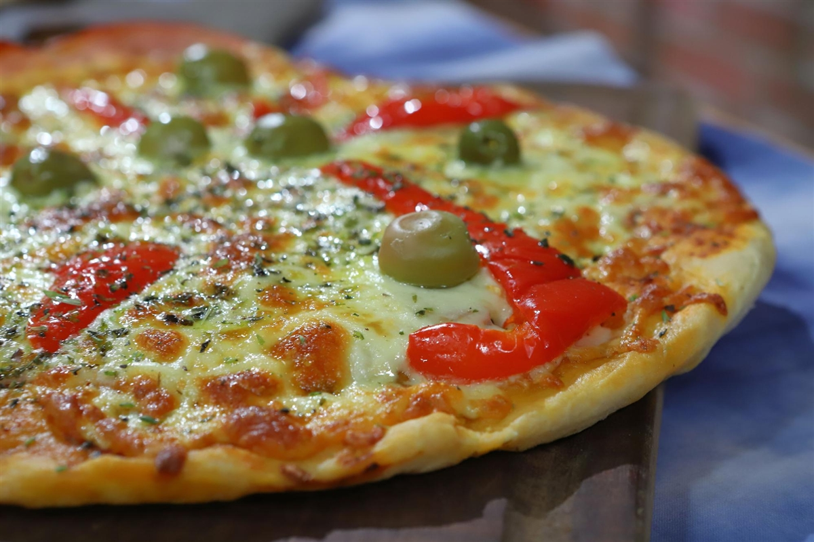

Pizza

Description
La receta para hacer esta deliciosa pizza consiste en dos partes fundamentales. En la primera
parte se centra en realizar la masa para la pizza. En la segunda parte los decorados para darle sabor.
Ingredientes
Fermento
- 50 grs levadura fresca
- 100 cc agua
- 1 cucharada azúcar
- 50 grs harina
Masa
- 1 kg harina
- 20 gr sal
- 500 cc agua
- 3 gr antimoho
Pasos
- Preparar en un jarro el fermento y taparlo con una bolsa
- En un tazón agregar la harina, la sal, el antimoho, el aceite, el fermento, un poco de agua y comenzar a amasar agregando el resto del agua de a poco
- Una vez lista la masa se la tapa con una bolsa de nylon y se la deja descansar 30 minutos para que leve
- Una vez que la masa levo se la pone sobre la mesa, se la estira en forma de cigarro (con las manos) y por último se cortan 5 bollos del mismo peso (si quieren hacer pizza a la piedra y 3 o 4 bollos para hacerla al molde)
- Se ponen los bollos sobre una placa, se los tapa y se los deja descansar 30' más
- En un tazón se ponen las 2 latas de tomate y con un pisa papas se los termina de triturar, luego se agrega la sal, el orégano y la provenzal, por último se mezcla bien todo y se deja preparado para ponerle a la masa
- Aceitamos las pizzeras y le damos la forma de pizza a los bollos, después ensalzamos la masa con una cuchara y las llevamos al horno por 15 o 20' para cocinar las prepizzas
Regresar a página principal